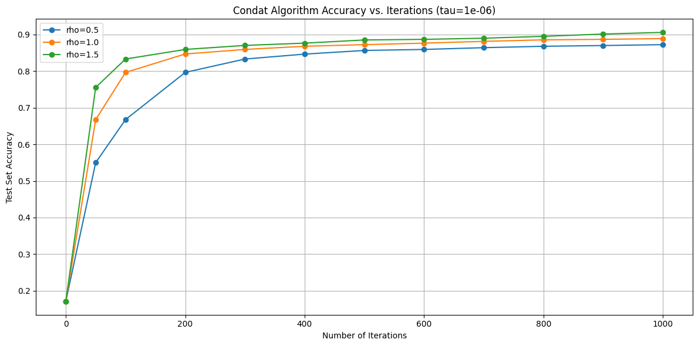
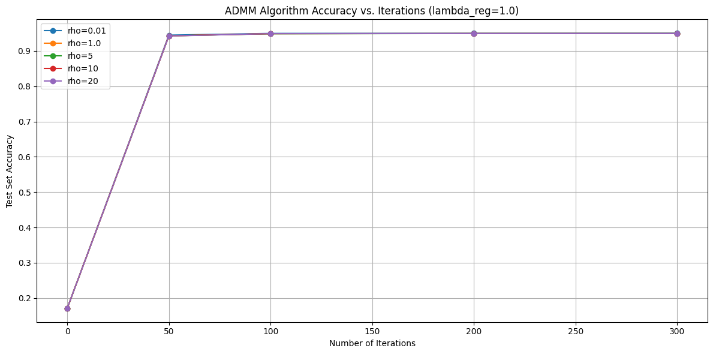

Introduction
Ce projet vise à développer un classificateur multiclasse pour la reconnaissance d'activités humaines à partir des données de capteurs de smartphones (base de données UCI HAR).
Les données proviennent de 30 volontaires effectuant 6 activités différentes (MARCHER, MARCHER EN MONTÉE, MARCHER EN DESCENTE, ASSIS, DEBOUT, COUCHÉ) avec un smartphone Samsung Galaxy S II attaché à la taille.
Le but est d'entraîner un modèle de classification supervisée capable de reconnaître automatiquement l'activité physique réalisée par un individu à partir des signaux des capteurs.
Méthodologie
Nous avons implémenté et comparé deux algorithmes d'optimisation pour résoudre le problème de classification avec régularisation L1 :
1. Algorithme de Condat (Forward-Backward)
Formulation du problème :
où f(x) = λ * h(x) (perte logistique différentiable)
et g(x) = Σ‖w(k)‖1 (régularisation L1 non-différentiable)
Étapes d'itération :
- Mise à jour de x : pk+1 = proxτg(xk - τ∇f(xk))
- Mise à jour avec relaxation : xk+1 = xk + ρ(pk+1 - xk)
2. Algorithme ADMM (Alternating Direction Method of Multipliers)
Formulation avec variable auxiliaire :
s.c. x - z = 0
Étapes d'itération :
- Mise à jour de x : xt+1 = argminx [λh(x) + (ρ/2)‖x - zt + ut‖22]
- Mise à jour de z : zt+1 = argminz [g(z) + (ρ/2)‖xt+1 - z + ut‖22]
- Mise à jour du multiplicateur : ut+1 = ut + (xt+1 - zt+1)
Hyperparamètres
Paramètres communs
Paramètres Condat
Paramètres ADMM
Résultats Finaux
Algorithme de Condat
Algorithme ADMM
Matrice de confusion (ADMM)
La matrice montre d'excellentes performances, en particulier pour la classe "COUCHÉ" qui est parfaitement classifiée.
Rapport de classification (ADMM)
| Classe | Précision | Rappel | F1-score | Support |
|---|---|---|---|---|
| MARCHER (1.0) | 0.94 | 0.99 | 0.97 | 496 |
| MONTÉE (2.0) | 0.94 | 0.94 | 0.94 | 441 |
| DESCENTE (3.0) | 0.98 | 0.93 | 0.95 | 403 |
| ASSIS (4.0) | 0.95 | 0.88 | 0.91 | 491 |
| DEBOUT (5.0) | 0.90 | 0.95 | 0.92 | 532 |
| COUCHÉ (6.0) | 1.00 | 1.00 | 1.00 | 537 |
| Moyenne | 0.95 | 0.95 | 0.95 | 2900 |
Comparaison des Méthodes
Évolution de la précision avec différents ρ (Condat)

Évolution de la précision avec ρ = 0.5 (convergence lente), ρ = 1.0 (convergence modérée), ρ = 1.5 (convergence rapide).
Comparaison des performances ADMM avec différents ρ

ADMM montre une robustesse au paramètre ρ, avec des performances similaires pour ρ ≥ 1.0.
Synthèse comparative
| Critère | Algorithme de Condat | Algorithme ADMM |
|---|---|---|
| Précision globale | 93.72% | 94.93% |
| Valeur objectif finale | 2268.94 | 1499.69 |
| Itérations nécessaires | 2000 | 300 |
| Temps de convergence | Plus lent | Plus rapide |
| Simplicité d'implémentation | Plus simple | Plus complexe |
| Robustesse aux paramètres | Sensible à ρ | Robuste à ρ ≥ 1.0 |
Conclusion
Les deux algorithmes d'optimisation ont produit des classificateurs performants pour la reconnaissance d'activités humaines à partir des données UCI HAR :
- L'algorithme de Condat a atteint une précision de 93.72% après 2000 itérations, démontrant une convergence stable mais lente.
- L'algorithme ADMM a obtenu une meilleure précision (94.93%) en seulement 300 itérations, avec une valeur objectif finale plus basse, indiquant une meilleure optimisation.
- Les deux méthodes montrent d'excellentes performances sur la classe "COUCHÉ" (100% de précision et rappel).
- La régularisation L1 a permis d'obtenir un modèle parcimonieux, avec seulement 198.27 de régularisation pour Condat.
Dans l'ensemble, ADMM s'est avéré plus efficace pour ce problème, offrant une meilleure précision avec moins d'itérations, bien que son implémentation soit plus complexe que celle de Condat.